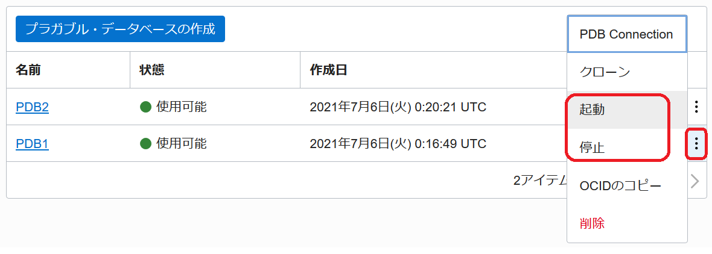
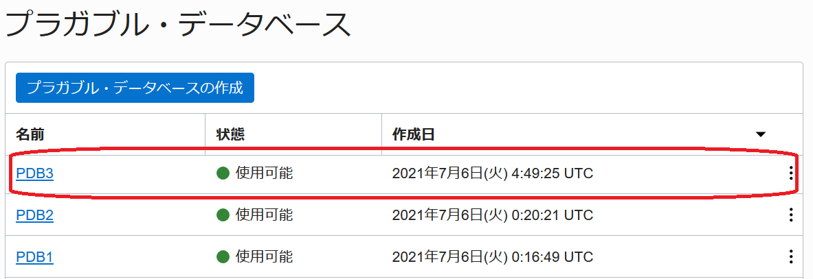

はじめに
Oracle Base Database Service(BaseDB)では、Oracle Cloud Infrastructure の上で稼働する Oracle Database の PDB を OCI コンソールから停止したり、起動したり、既存 PDB からクローンするなどの操作が簡単に行う事が可能です。この章では実際にどのように操作するのか確認していきます。
前提条件 :
- Oracle CloudでOracle Databaseを使おう を通じて Oracle Database の作成が完了していること
注意 チュートリアル内の画面ショットについては現在の画面と異なっている場合があります。
目次
所要時間 : 約15分
1. PDB を起動・停止してみよう
まずは、コンソール上で作成済みの PDB を確認する画面への遷移、および PDB の起動・停止について確認していきましょう。
-
コンソールメニューから Oracle Database → Oracle Base Database (VM, BM) を選択し、有効な管理権限を持つコンパートメントを選択します
-
操作したい PDB を持つ DB システムを選択します
-
DBシステムの詳細から、対象のデータベースを選択します
- 左側の リソース から、プラガブル・データベース を選択します
選択後、次の画面が表示されます この画面では、PDB1 と PDB2 の2つの PDB が対象データベースに構成されています
- 操作したい PDB の右側にある ・・・ メニューから、起動や停止といった操作を行う事が可能です
※ここでは、PDB1 の停止を実施します - 確認画面が表示されるので、PDBの停止を選択すると対象のPDBの 状態 が「更新中」に変化します


- 状態 が「使用可能」に戻れば停止完了です
同様の手順で「起動」を選択する事で PDB を起動する事が可能です。なお、実際にデータベースへ接続して確認すると、PDB1が MOUNT 状態になっています

2. PDB を新規作成してみよう
続いて、PDBを新規作成する場合の手順を確認しましょう。
-
先ほどの画面から、プラガブル・データベースの作成を選択します
- 立ち上がった プラガブル・データベースの作成 ウィンドウに以下の項目を入力します
- PDBの名前入力 - 任意（例 :pdb1）
- PDB管理パスワード - 任意（例 : WelCome123#123#)
- データベースのTDEウォレット・パスワード - 101: Oracle Cloud で Oracle Database を使おうで データベース情報の入力欄 に設定したパスワードを入力

-
プラガブル・データベースの作成 ボタンを押します
（PDBの作成がバックエンドで開始します。作業が完了するとステータスが PROVISIONING… から AVAILABLE に変わります） - 画面からPDBが作成されている(※今回のケースではPDB3)事が確認できます

データベースへ接続して確認すると、PDB3が READ WRITE モードで起動しています。

3. 既存 PDB からクローン PDB を作成してみよう
- クローン元となる PDB の右側にある ・・・ メニューから、クローン を選択します
※この例では、PDB2 をクローン元としています
- 立ち上がった PDBのクローニング ウィンドウに以下の項目を入力します
- PDB名 - 任意（例 :pdb1）
- Database TDE wallet password - - 第8章でデータベース作成時に設定したパスワードを入力
- PDB管理パスワード - 任意（例 : WelCome123#123#)

-
PDBのクローニング ボタンを押します
（PDBのクローニングがバックエンドで開始します。作業が完了するとステータスが PROVISIONING… から AVAILABLE に変わります） - 画面からPDBがクローニングされている事が確認できます(※このケースではPDB2_CLONEが作成されている事が分かります。)

新規作成時と同様にデータベースへ接続して確認すると、PDB2_CLONEが READ WRITE モードで起動しています。

以上で、この章の作業は終了です。